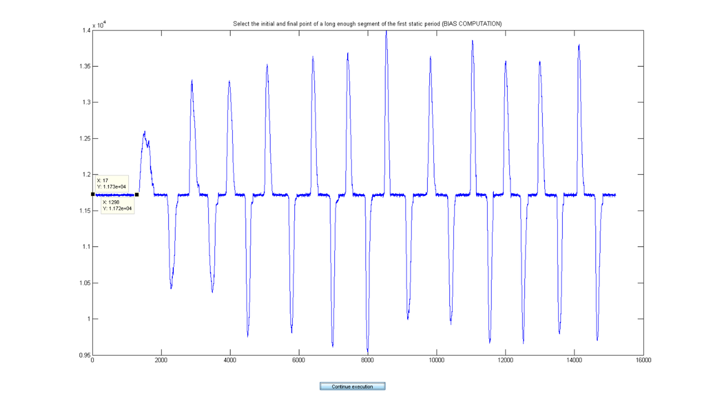
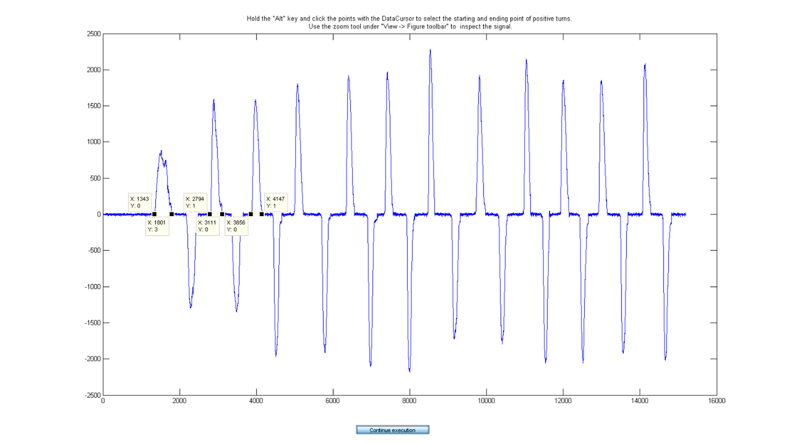
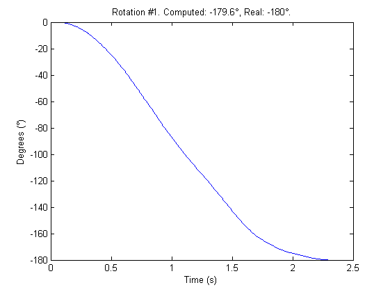
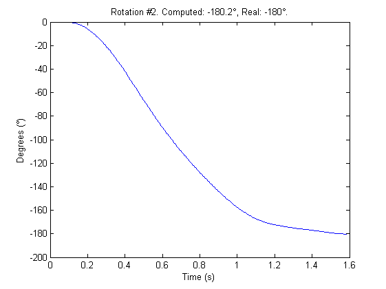
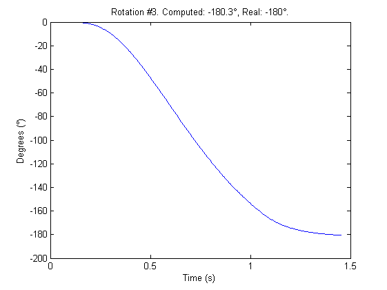

GYROSCOPE CALIBRATION
The following script carries out the computation of the gyroscope's calibration parameters. It is based on rotating the gyroscope a known angle instead of subjecting it to a known angular rate.
Contents
- 0) Initial configuration.
- 1) Select the the sensor unit.
- 2) Extract data channels from data matrix according to selected unit.
- 3) Load file containing the raw calibration data.
- 4) Get data info from Header.
- 5) Plot gyroscope signal so the user can select the bias.
- 6) Plot gyroscope signal so the user can select the rotations.
- 7) Compute the scale factor for each signal segment.
- 8) Calibrate the signal segments and integrate them to check rotation.
- 9) Save calibration parameters.
- Authors : Alberto Olivares and Kai Bötzel.
- Entities : Universidad de Granada & Ludwig-Maximilians Universität München.
- Version : 1.0.
- Last modification : 5/11/2013.
This script requires user interaction. More specifically, the user will firstly be shown the raw angular rate signal containing the positive and negative 180 turns. He should, then select the initial and final point of the static period at the beginning of the signal. The selection is done using the 'datacursor' which is already activated when the figure pops up. In order to select more than one point, the user should press the 'Alt' key while clicking the points. Once the initial and final points are selected, the user should click 'continue execution' and the script will compute the static bias by selecting the mode of the raw values gathered during the satic period.
Next, the user is shown the bias corrected raw angular rate signal. This time, he should select the initial and ending points of the positive rotations. In order to determine these points, the user should use the 'zoom' tool which can be activated under 'View' -> 'Figure toolbar' together with the data cursor in order to select the 0 values which are closest to the beginning and end of the turns. Sometimes, due to the noise, there are no 0 values. The user should then try to select the closest value to 0 (-2, -1, 1, or 2).
In order to increase the precission of the computation, the user should select the initial and final points of at least 4 or 5 positive rotations. Before clicking on 'continue execution' be sure that the number of selected points is even. When ready, click 'continue execution' and the script will compute the average scale factor. Using this value and the bias value computed at the beginning of the script, the segments of the raw signal contanining the 180 turns are calibrated and then integrated. If the computation of the parameters is successful, then the computed rotation should be close to 180 degrees (or -180 degrees in the case of the gyroscopes which rotation axis is inverted).
At the end of the script, the computed calibration parameters (scale factor and bias) are stored in the 'data/calibration/gyroscopes' folder under the 'segment_gyroCalParams' name.
close all; clear all; clc;
0) Initial configuration.
Load library containing necessary functions.
gw = gwLibrary;
Specify the rotation angle (in degrees) used during the maneuvers to gather de raw calibration data.
rotation_angle = 180;
Load GaitWatch's data structure.
load data/gWDataStruct.mat
size_data_struct=size(data_struct);
Set the abbreviation of the sensor which is being addressed here (gyroscope).
magnitude = 'g';
1) Select the the sensor unit.
Now, the user is shown a list in which he should select the segment containing the gyroscope which is going to be calibrated. Build the list which is shown to the user and which containing the different body segments.
select_ok_flag = 0;
while select_ok_flag == 0
Define the list of segments which are shown to the user.
S = cell(1,size_data_struct(1));
for i = 1:size_data_struct(1)
S{i} = [data_struct{i,4},' ',data_struct{i,5}];
end
S = unique(S,'stable');
Show the selection dialog to the user.
Selection = listdlg('ListString',S,'Name',... 'Select the unit you wish to calibrate','ListSize',[160 120],... 'SelectionMode','multiple'); if ~isempty(Selection) select_ok_flag = 1; else msg = msgbox('Please select at least one segment'); uiwait(msg); end

end
2) Extract data channels from data matrix according to selected unit.
Given the selection of the segment, the data are loaded from the local hard drive and the corresponding channel is extracted. Also the sign of the rotation of the axis is defined (see the Gaitwatch's channel information excel file).
Definition of the segment name, channel number and rotation sign according to the segment selected by the user in step 1.
switch Selection
Left shank.
case 1
segment_name = 'shank'; position = 'right'; sensor_axis = 'Y'; rotation_sign = -1;
Left thigh
case 2
segment_name = 'thigh'; position = 'right'; sensor_axis = 'Y'; rotation_sign = -1;
Right shank.
case 3
segment_name = 'shank'; position = 'left'; sensor_axis = 'Y'; rotation_sign = -1;
Right thigh.
case 4
segment_name = 'thigh'; position = 'left'; sensor_axis = 'Y'; rotation_sign = -1;
Left arm.
case 5
segment_name = 'arm'; position = 'left'; % Show the axis selection menu. S = {'X axis', 'Y axis'}; [Selection,ok] = listdlg('ListString', S, 'Name',... 'Select the axis of left arm', 'ListSize', [160 100]); if Selection == 1 sensor_axis = 'X'; rotation_sign = -1; elseif Selection == 2 sensor_axis = 'Y'; rotation_sign = +1; end
Right arm.
case 6
segment_name = 'arm'; position = 'right'; % Show the axis selection menu. S = {'X axis','Y axis'}; [Selection,ok] = listdlg('ListString', S, 'Name',... 'Select the axis of right arm', 'ListSize', [160 100]); if Selection == 1 sensor_axis = 'X'; rotation_sign = -1; elseif Selection == 2 sensor_axis = 'Y'; rotation_sign = +1; end
Trunk.
case 7
segment_name = 'trunk'; position = 'center'; % Show the axis selection menu. S = {'X axis', 'Y axis', 'Z axis'}; [Selection,ok] = listdlg('ListString', S, 'Name',... 'Select the axis of trunk', 'ListSize', [160 100]); if Selection == 1 sensor_axis = 'X'; rotation_sign = -1; elseif Selection == 2 sensor_axis = 'Y'; rotation_sign = +1; elseif Selection == 3 sensor_axis = 'Z'; rotation_sign = +1; end end % End of segment selection switch.
3) Load file containing the raw calibration data.
The user can select between loading the data directly from GaitWatch or loading it from the hard drive.
S = {'Load data from GaitWatch','Load data from hard drive'};
Selection = listdlg('ListString',S,'Name',...
'Select the origin of the data','ListSize',[250 100],'SelectionMode',...
'single');

switch Selection
Load data from GaitWatch.
case 1
GW_comm;
data_path = strcat('data/calibration/gyroscope/',position,'_',...
segment_name,'_',sensor_axis,'_rawGyroData_',...
num2str(rotation_angle),'turns.mat');
save(data_path,'data','FileHeader');
Load data from the hard drive.
case 2
[data, FileHeader] = gw.openGWfile();
end
Extract data channel containing the raw angular rate of the selected segment and convert the format of the data (from int16 to double).
channel = gw.getDataChannel(data_struct, magnitude, sensor_axis, ...
position, segment_name);
g_raw = double(data(:,channel));
4) Get data info from Header.
We now extract some data from the header of the data file. To do this, the getFHinfo function contained in gwLibrary is called.
[f, cal_date, cal_start_time, cal_end_time] = gw.getFHinfo(FileHeader);
5) Plot gyroscope signal so the user can select the bias.
Now the user has to select the initial and final points of the initial static period so the bias is computed.
bias_flag = 0;
while bias_flag == 0
First, set the title of the figure which will be shown to the user. Then the index extraction function "getDCindexes" (included in gwLibrary) is called to extract the indexes of the points selected by the user.
fig_title = ['Select the initial and final point of a long enough',... ' segment of the first static period (BIAS COMPUTATION)']; indexes = gw.getDCindexes(g_raw,fig_title);
Check if the user has selected two points. If not, a message box informs the user and the figure is shown again to repeat the procedure.
if length(indexes) == 2 bias_flag = 1; else err_msg = msgbox(sprintf('Select 2 points. You selected %d points.',length(indexes))); uiwait(err_msg); end
end % End of bias figure while. close all
Sort indexes in increasing order.
indexes = sort(indexes);
Extract initial and final points.
starting_point = indexes(1); ending_point = indexes(2);
The bias is computed by finding the mode of the the selected signal segment.
bias = mode(g_raw(starting_point : ending_point));
6) Plot gyroscope signal so the user can select the rotations.
After the computation of the bias, we need to compute the scale factor. This is done as explained in the file preface.
The user is shown the raw angular rate corrected in bias to select the intial and final points of the positive rotations.
sf_flag = 0;
while sf_flag == 0
Again, set the title of the figure which will be shown to the user. Then the index extraction function "getDCindexes" (included in gwLibrary) is called to extract the indexes of the points selected by the user.
fig_title = sprintf(['Hold the "Alt" key and click the points with the',... ' DataCursor to select the starting and ending point of positive',... ' turns.\n Use the zoom tool under "View -> Figure toolbar" to ',... ' inspect the signal.']); indexes = gw.getDCindexes(g_raw - bias, fig_title);
Check if the number of selected points is even, i.e. all the points are in pairs of (initial_point, final_point). If not, a message is shown to the user and the figure will be shown again.
if mod(length(indexes),2) == 0 sf_flag = 1; else err_msg = msgbox(sprintf(['The number of points has to be even.',... ' You selected %d points.'], length(indexes))); uiwait(err_msg); end
end
Sort indexes in increasing order.
indexes = sort(indexes);
Inform the user that the extraction has been successful.
index_message = msgbox(sprintf('The following indexes were extracted: \n %s',... num2str(indexes)),'Done'); uiwait(index_message); close all

7) Compute the scale factor for each signal segment.
Once we have all the initial and final points of the segments of the signal including the rotations, we extract each segment, build the time associated time signal and integrate them to find the scale factor.
Initialize the scale factors vector.
k = zeros(1, length(indexes) / 2);
for i = 1 : 2 : length(indexes) - 1
Extract rotation segment.
wg = g_raw(indexes(i) : indexes(i + 1));
Compensate bias.
wgcorr = wg - bias;
Build associated time signal.
time = zeros(1,length(wgcorr));
for j = 2 : length(wgcorr)
time(j) = time(j - 1) + 1 / f;
end
Multiply the rotation by the associated rotation sign of the segment.
rotation = rotation_sign * rotation_angle;
Compute scale factor and add it to the scale factors vector. The computation of the scale factor is done by calling the "gyro1DscaleF" function which is included in "gwLibrary".
k(round(i/2)) = gw.gyro1DscaleF(time, wgcorr, rotation);
end
Compute the average scale factor and the standard deviation.
k_av = mean(k); k_std = std(k);
8) Calibrate the signal segments and integrate them to check rotation.
Now we will check the goodness of the computed scale factor. To do so we use the estimated bias and scale factor to calibrate each one of the rotation segments. We then integrate them and compare them to the known rotation angle. If the computed rotation angle is close to the known angle, then the estimation has been successful.
for i = 1 : 2 : length(indexes) - 1
wg = g_raw(indexes(i) : indexes(i+1)); wgC = (wg - bias) / k_av; int_wgC = zeros(1,length(wgC)); time = zeros(1,length(wgC)); for j = 2 : length(wgC) time(j) = time(j-1) + 1 / f; end
Integrate segment.
for j = 2 : length(wgC) int_wgC(j) = int_wgC(j-1) + 0.5 * (time(j) - time(j-1)) * (wgC(j) + wgC(j-1)); end range = abs(min(int_wgC) - max(int_wgC)) * rotation_sign;
Plot integrated segment and save figure.
figure plot(time,int_wgC) title(sprintf('Rotation #%d. Computed: %0.1f°, Real: %d°.', round(i/2), range, rotation)); xlabel('Time (s)'); ylabel('Degrees (°)') figure_path = strcat('figures/calibration/gyroscope/',position,'_',... segment_name,'_',sensor_axis,'_gyroCalParamCheck',... num2str(round(i/2)),'.fig'); saveas(gcf,figure_path);  
end close all
9) Save calibration parameters.
Finally, the calibration parameters are stored together with the date and time of calibration.
data_path = strcat('data/calibration/gyroscope/',position,'_',... segment_name,'_',sensor_axis,'_gyroCalParams.mat'); save(data_path,'k_av','bias','cal_date','cal_start_time','cal_end_time');